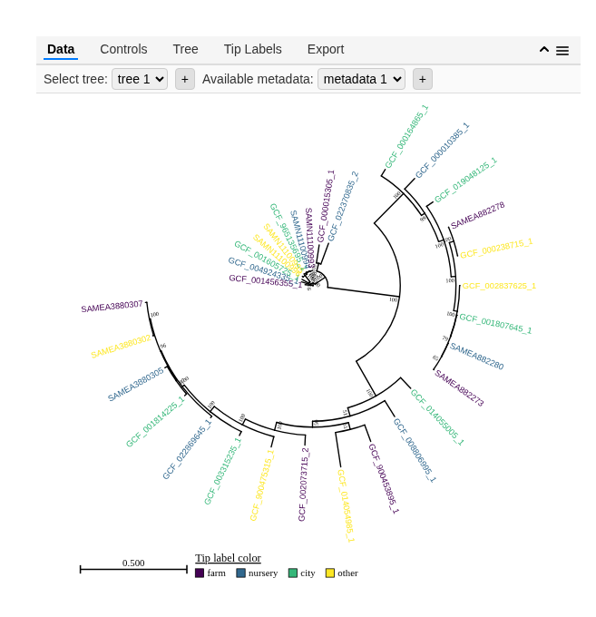
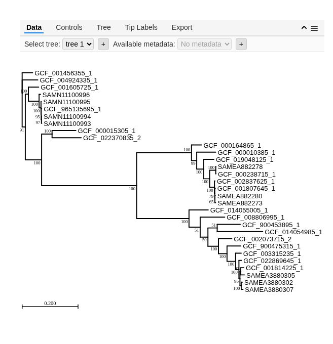
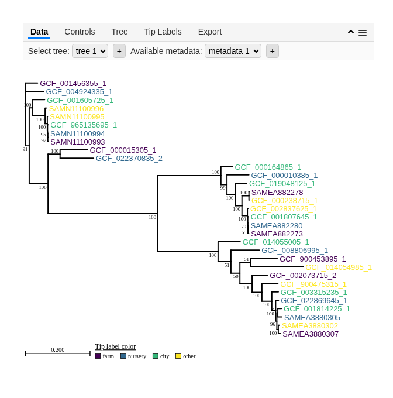
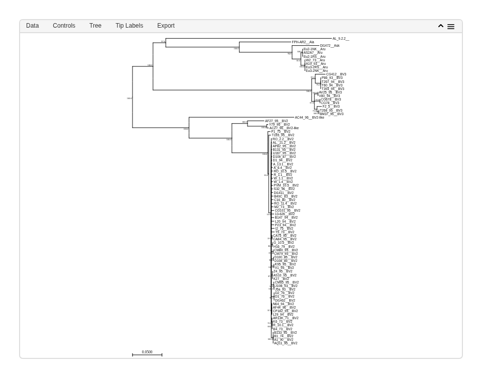

A wrapper for the javascript heat-tree package for interactive phylogenetic tree visualization widgets.
Installation
For now, heattree is only available on Github and can be installed with devtools:
devtools::install_github('grunwaldlab/heattree')Quick start
The package includes example data sets so you can try it out with minimal effort. After installing the packages, simply run the lines below to get an idea of how it works:
library(heattree)
heat_tree(example_tree_1, metadata = example_metadata_1, aesthetics = c(tipLabelColor = 'source'), layout = 'circular')
You will have the option to interactively upload your own trees/metadata in the widgets menu as well.
Basic Usage
This package is designed to be as simple to use as possible while also allowing for advanced customization. In fact, since you can upload tree and metadata interactively, it is entirely valid to create a widget with no input:
You can also supply trees/metadata to plot when the widget in created. The following types of input data are currently supported:
- Paths to newick files
- Newick-formatted text (a character vector with a single item)
-
phyloobjects from theapepackage
For example, here is the test data included in the package in these three formats:
example_tree_path <- system.file('extdata', 'example_tree_1.treefile', package = 'heattree')
print(example_tree_path)## [1] "(GCF_001456355_1:0.0374257169,GCF_004924335_1:0.0560765283,((GCF_001605725_1:0.0368285060,((SAMN11100995:0.0009734615,((SAMN11100993:0.0011764590,SAMN11100994:0.0007851371)97:0.0008756385,GCF_965135695_1:0.0017680397)95:0.0007738859)100:0.0068614333,SAMN11100996:0.0052198129)100:0.0382367799)100:0.0110598189,((GCF_000015305_1:0.0852699717,GCF_022370835_2:0.1042432673)100:0.0373624593,((((GCF_019048125_1:0.0361957779,((GCF_002837625_1:0.0019194673,((SAMEA882273:0.0024741566,SAMEA882280:0.0014582935)65:0.0005123485,GCF_001807645_1:0.0022634792)79:0.0010696016)100:0.0170761384,(GCF_000238715_1:0.0009371376,SAMEA882278:0.0004802655)100:0.0216873805)100:0.0211814175)100:0.0252764233,GCF_000010385_1:0.0681115223)99:0.0186822467,GCF_000164865_1:0.0357435232)100:0.1963223006,((((GCF_014054985_1:0.1629484002,GCF_900453895_1:0.0825572782)51:0.0331440744,((((((SAMEA3880305:0.0129810163,GCF_001814225_1:0.0110829584)87:0.0029936621,(SAMEA3880302:0.0039658683,SAMEA3880307:0.0064143661)100:0.0045372579)96:0.0036784831,GCF_022869645_1:0.0090709218)100:0.0118974163,GCF_003315235_1:0.0202070869)100:0.0306956825,GCF_900475315_1:0.0495967784)100:0.0305557472,GCF_002073715_2:0.0478873659)100:0.0377786543)50:0.0277495030,GCF_008806995_1:0.0878264736)51:0.0399857483,GCF_014055005_1:0.0688670840)100:0.1874050401)100:0.3400567094)100:0.0583908447)91:0.0112793607);"##
## Phylogenetic tree with 31 tips and 29 internal nodes.
##
## Tip labels:
## GCF_001456355_1, GCF_004924335_1, GCF_001605725_1, SAMN11100995, SAMN11100993, SAMN11100994, ...
## Node labels:
## , 91, 100, 100, 100, 95, ...
##
## Unrooted; includes branch length(s).These three commands all produce the same plot:
heat_tree(example_tree_path)
heat_tree(example_text)
heat_tree(example_phylo)
You can also supply metadata for the tree by supplying a path to a TSV/CSV or a data.frame/tibble.
This table must have a “node_id” column with values matching the IDs in the treefile. For example, this data is associated with the above example tree:
example_metadata_path <- system.file('extdata', 'example_metadata_1.tsv', package = 'heattree')
print(example_metadata_path)
example_metadata <- readr::read_tsv(example_metadata_path)
print(example_metadata)## # A tibble: 31 × 5
## node_id abundance frequency source font_style
## <chr> <dbl> <dbl> <chr> <chr>
## 1 GCF_001456355_1 145 0.23 farm normal
## 2 GCF_004924335_1 892 0.67 nursery normal
## 3 GCF_001605725_1 234 0.45 city normal
## 4 SAMN11100995 567 0.89 other italic
## 5 SAMN11100993 123 0.12 farm italic
## 6 SAMN11100994 456 0.34 nursery italic
## 7 GCF_965135695_1 789 0.56 city normal
## 8 SAMN11100996 321 0.78 other italic
## 9 GCF_000015305_1 654 0.23 farm normal
## 10 GCF_022370835_2 987 0.91 nursery bold
## # ℹ 21 more rowsSimilar to tree input, both paths and parsed data are accepted. Metadata can be used to color or size tree elements, similar to how ggplot2 works. The aesthetics parameter is used to specify which columns correspond to which aesthetics. These two commands produce the same plot:
heat_tree(example_tree_path, metadata = example_metadata_path, aesthetics = c(tipLabelColor = 'source'))
heat_tree(example_tree_path, metadata = example_metadata, aesthetics = c(tipLabelColor = 'source'))
Check the heat-tree javascript package documentation for the list of valid aesthetics.
Initial settings
Although the widget is primarily designed for interactive use, the initial settings can be set programmatically. All of the value of options described in the heat-tree javascript package documentation can be used as optional parameters. For example, the layout can be changed to circular like so:
heat_tree(example_phylo, layout = 'circular')
Multiple trees
The heat_tree widget is capable of managing multiple trees at once. To initialize a widget with multiple trees, supply lists of tree and metadata inputs. If metadata/aesthetics are also supplied they must a list as well that corresponds to the list of trees. For example:
Contributing
Contributions are welcome! Please visit the GitHub repository to report issues or submit pull requests.